SUPERRIORMED · 功能医学系列课程
内分泌 · 生殖 · 消化Hormones · Reproduction · Digestion
荷尔蒙：细胞的通讯 —— 三大腺轴、环境毒素、生殖年轻化与肠道菌群
主讲：张楚乔
免疫调控与抗衰医学中心
2026.07.04
免疫调控与抗衰医学中心
2026.07.04
OUR VISION
享受 120 年 25 岁的生命LIVE A 120-YEAR LIFE IN A 25-YEAR-OLD BODY
科学家提出：「衰老不是必然，而是一种可管理、可干预、甚至可逆转的状态。」
衰老干预的三把钥匙，都写在激素的通讯网络里：性腺管青春，甲状腺管代谢，肾上腺管压力——而它们共同的「底座」，是肠道。
OUR PHILOSOPHY
前瞻的 · 专属的 · 卓越的「生命管理艺术」
与公立体系遵循完全不同的哲学——
「 工匠精神，精益求精。 」
荷尔蒙是全身细胞的通讯语言。管理好这套语言，就是管理衰老的节奏。
CHAPTER 01 · HORMONES: CELL COMMUNICATION
荷尔蒙：细胞的通讯
三大腺轴 —— 青春 · 代谢 · 压力
性 腺青春 SEX GLANDS
甲状腺代谢 THYROID
肾上腺压力 ADRENAL
肠道菌群共同的底座 GUT
但当「假信号」混入网络——环境荷尔蒙（内分泌干扰物 EDCs）模仿、阻断或放大真实激素的作用，整套通讯就会被劫持。
CHAPTER 01 · 环境荷尔蒙 ENDOCRINE DISRUPTORS
环境荷尔蒙：混入通讯网络的「假信号」
三大类最常见内分泌干扰物，就藏在日常接触里
对羟基苯甲酸酯 · 防腐剂
- 食品、化妆品及药品
- 结构类似雌激素，可结合雌激素受体
邻苯二甲酸酯 · 塑化剂
- 胶合、涂料、油墨
- 抗雄激素作用——干扰睾酮通路
酚类 · 内涂层
- 罐头、瓶盖和供水管道
- 双酚 A（BPA）类，雌激素活性
化妆品 / 护肤品：防腐剂类环境荷尔蒙的日常暴露源
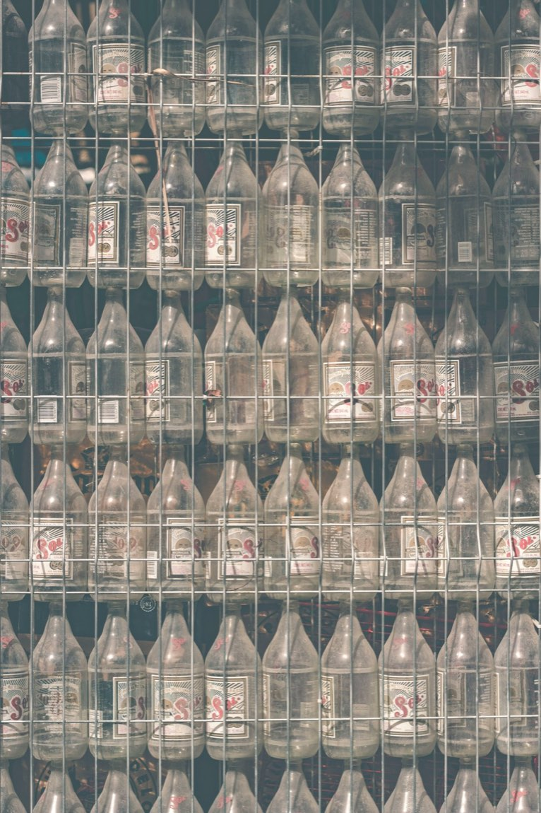
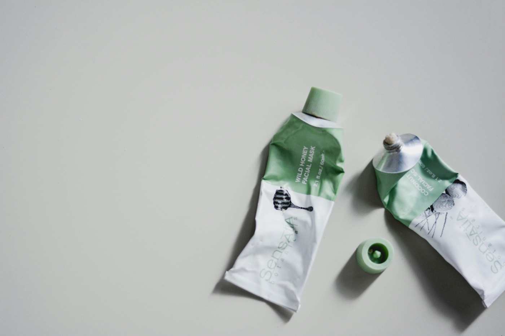
CHAPTER 02 · SEX HORMONES: THE FOUNTAIN OF YOUTH
性荷尔蒙：青春之源
女性：雌二醇 · 孕激素 ｜ 男性：睾酮
断崖式衰老脑 · 代谢 · 骨睾酮：赢家效应
女性荷尔蒙的衰退是一条陡峭的曲线——绝经期前后，衰老速度陡增；男性睾酮的流失则更像缓坡，但同样改变身材、情绪与意志。
CHAPTER 02 · 性荷尔蒙（1）
断崖式衰老：女性荷尔蒙的急衰退，风险更高
月 6.2 倍速 —— 绝经后的胶原蛋白流失曲线
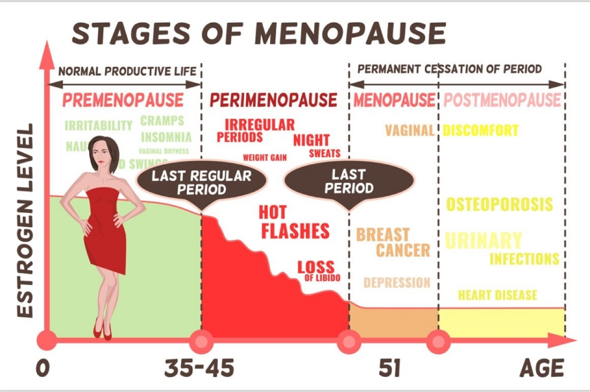
雌激素曲线与绝经分期：围绝经期前（35–45 岁，易怒失眠）→ 围绝经期（潮热盗汗）→ 绝经期（约 51 岁）→ 绝经后期（骨质疏松、心脏病风险）
为什么是「断崖」
- 雌激素对胶原蛋白、骨密度、血管内皮是持续性维持信号
- 信号骤停 → 胶原蛋白流失加速（约 6.2 倍）→ 皮肤、骨、血管同步「断供」
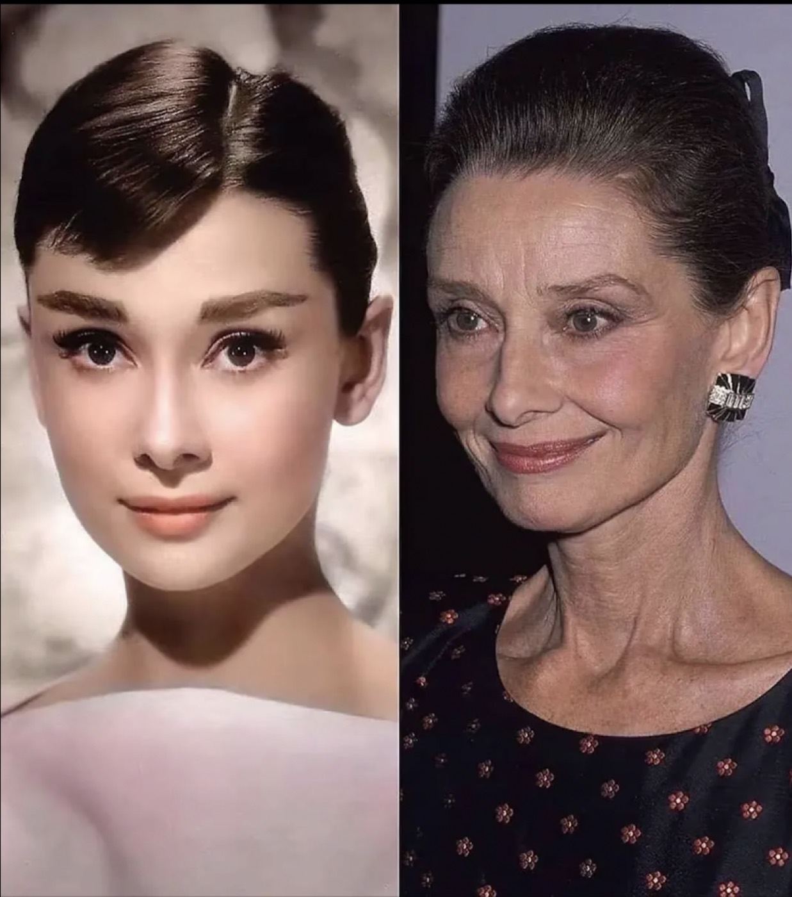
同一人年轻 vs 年老的对比：胶原蛋白流失写在脸上
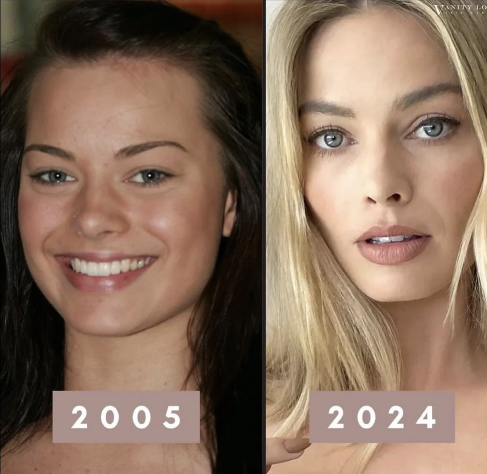
绝经期前后：衰老速度的陡峭切换
CHAPTER 02 · 性荷尔蒙（2）
靶器官之一 · 脑：女性痴呆风险高出 2.7 倍
全身内分泌腺体分泌的激素，直接影响大脑功能
内分泌紊乱 → 脑功能下降
- 记忆力下降、情绪紊乱、失眠等
雌孕激素下降 → Beta 淀粉样蛋白
- 雌孕激素对神经元有保护作用，撤退后 Aβ 清除下降、沉积加速
- 导致女性老年痴呆发生率高于男性 2.7 倍
临床提示
- 围绝经期「脑雾」不是心理问题——是激素信号问题，可评估、可干预
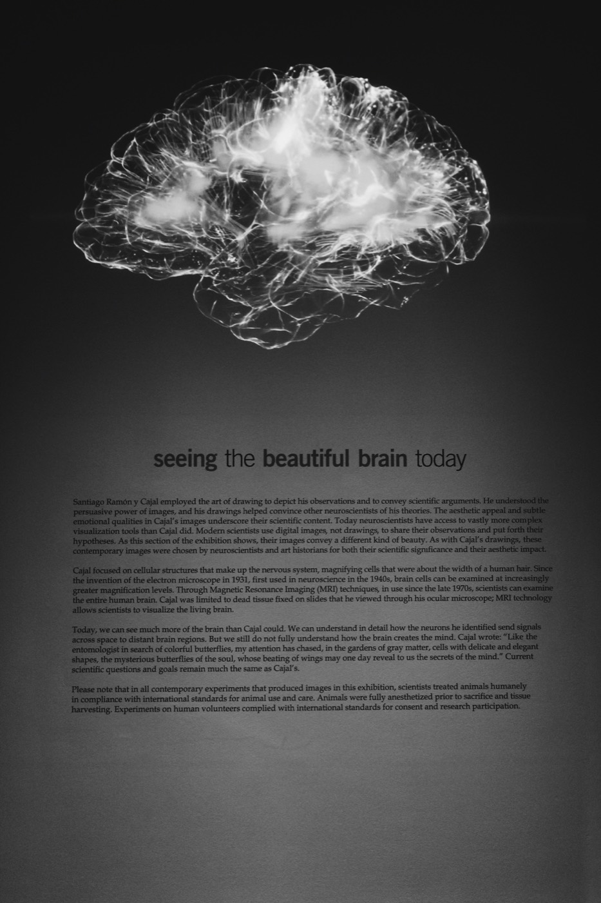
激素与脑：内分泌信号全面参与认知与情绪调节
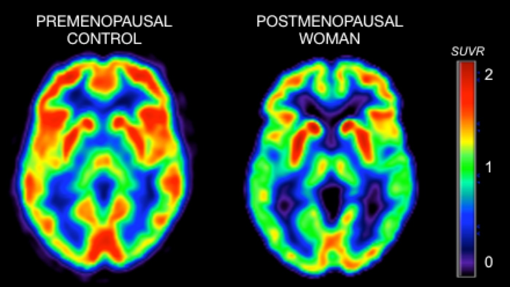
Beta 淀粉样蛋白（Aβ）沉积 —— 阿尔茨海默病核心病理
CHAPTER 02 · 性荷尔蒙（3）
靶器官之二 · 代谢：「瘦」，也会高血脂
激素不足导致的代谢减慢，与吃多吃少无关
代谢减慢的真相
- 女性因相关激素不足导致代谢减慢
- → 肥胖、臃肿及水肿（即使吃得不多）
「瘦，也会高血脂」
- 体重正常 ≠ 代谢健康；激素驱动的脂质代谢紊乱，瘦人同样出现血脂异常
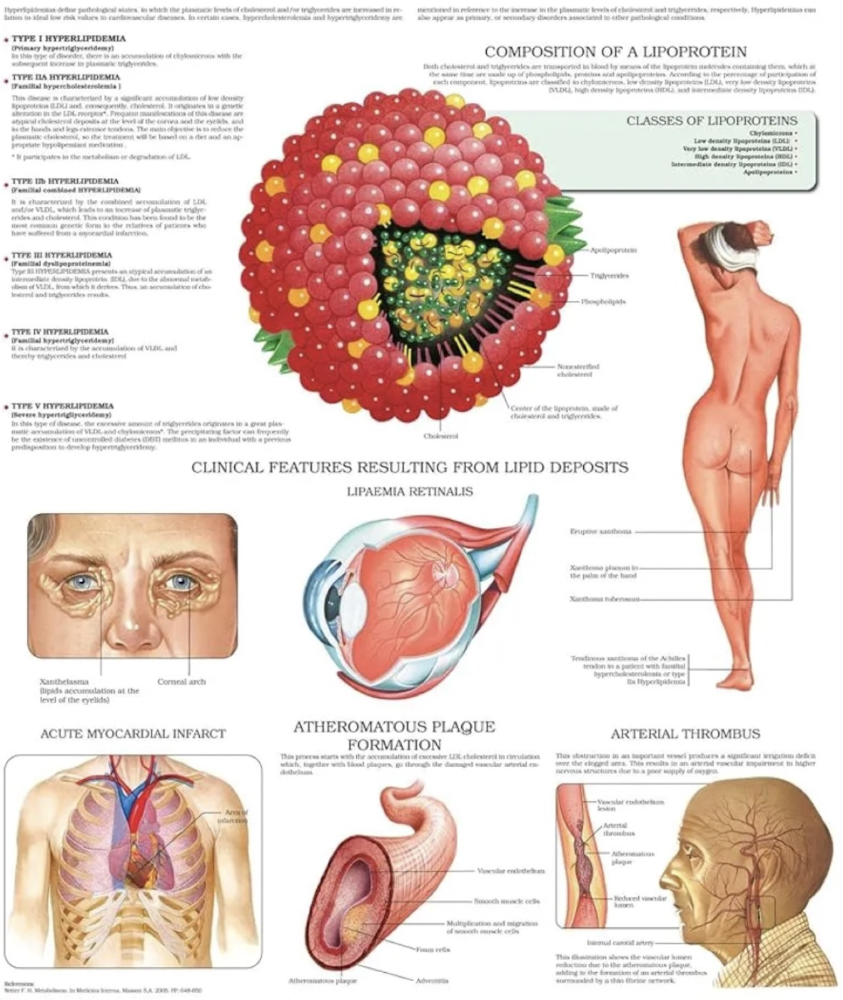
激素不足 → 代谢减慢 → 肥胖 / 臃肿 / 水肿
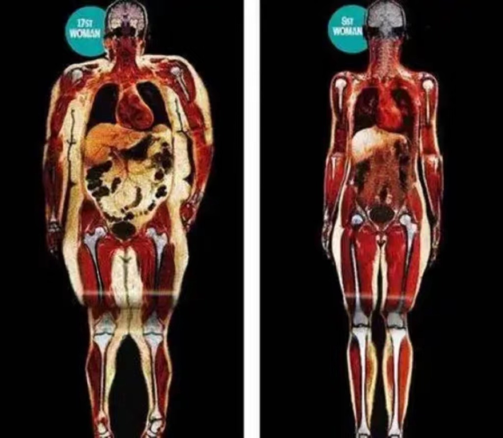
体成分改变：代谢率的激素决定权
CHAPTER 02 · 性荷尔蒙（4）
靶器官之三 · 骨：不同年龄的骨流失
雌激素是骨密度的「守护者」——撤退即流失
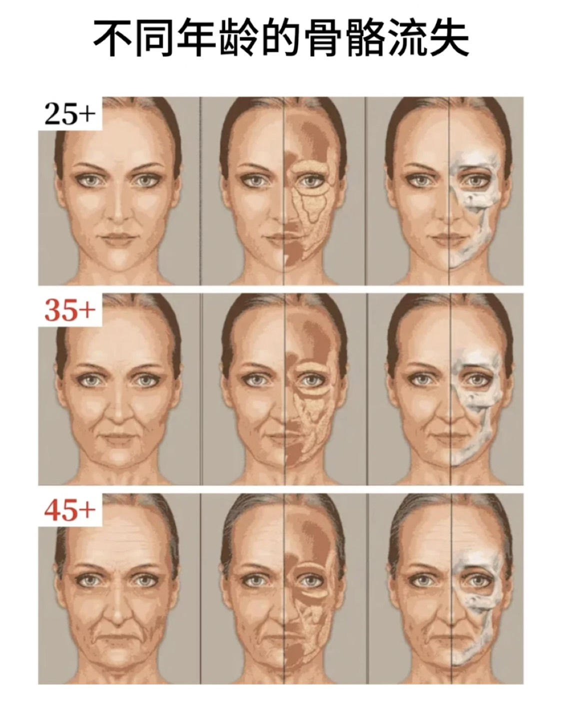
不同年龄的衰老带来骨流失
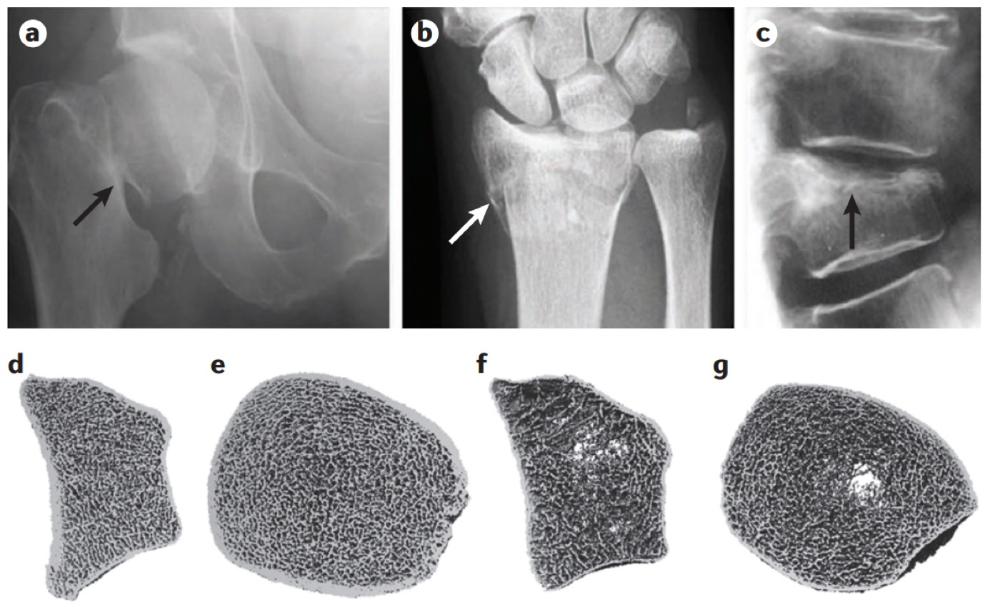
骨密度随年龄的下降曲线
关键点
- 绝经后 5–10 年为快速骨丢失期
- 骨量储备宜早不宜迟：筛查 → 干预 → 监测
CHAPTER 02 · 性荷尔蒙（5）· 男性
「力量不是隐喻，而在荷尔蒙的语言里」
睾酮 —— 男性的第二张身份证
睾酮：塑造男性身体与行为的核心激素
睾酮做了什么
- 磨砺支配欲、麻痹恐惧
- 塑造肌肉、下颌线、声音与竞争的意志
- 放大专注性、攻击性和冒险精神
- 带来「赢家效应」—— 赢，让睾酮更高；睾酮高，更敢赢
下降时
- 腹型肥胖 · 肌力流失 · 情绪钝化 · 动力下降 —— 常被误认为「只是老了」
CHAPTER 03 · BIOIDENTICAL HORMONES: THE BIOLOGICAL CHIP
生物同源荷尔蒙：生物芯片
缓释植入 · 个性化剂量 · 绕过肝脏首过效应
女性芯片 6–9 个月男性芯片 约 6 个月围绝经期案例对比外院优势
与化学合成激素不同，生物同源荷尔蒙（BHT）与人体自身激素结构完全一致；皮下芯片缓释，模拟生理性分泌节律。
CHAPTER 03 · 生物芯片（1）· 方案
芯片植入：剂型与维持时间
以缺乏情况与个体目标个性化调整
女性荷尔蒙芯片
- 芯片植入：可维持 6–9 个月（视缺乏情况而定）
- 口服 / 栓剂辅助：视想要月经与否，个性化调整
男性荷尔蒙芯片
- 芯片植入：剂量可控，个性化调整
- 维持时间 6 个月左右（视缺乏情况而定）
加强 / 短效选择
- 常规版：芯片植入，可维持 3 个月（视缺乏情况而定）
- MINI 版：芯片植入，可维持 1 个月（视缺乏情况而定）—— 适合起步试敏或短期调整
芯片的逻辑
- 皮下恒定缓释 → 避免血药浓度大起大落
- 直达体循环，不经消化道与门静脉（详见「对比外院」一屏）
CHAPTER 03 · 生物芯片（2）· 临床案例
案例：44 岁，围绝经期症状改善
停经 · 潮热盗汗 · 失眠抑郁 · 皮肤衰老加速 · 阴道干涩
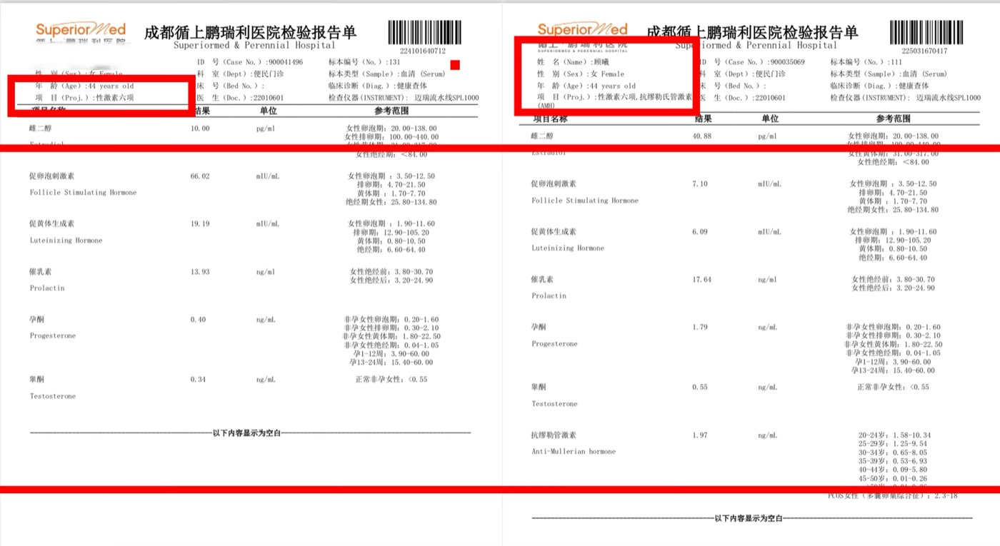
治疗前（左）vs 治疗 6 个月后（右）：FSH 66.02→7.10 · LH 19.19→6.09 · AMH 升至 1.97
治疗六个月后 · 指标
FSH 66.02 → 7.1由绝经水平恢复至约 30 岁水平
雌二醇 10 → 40.88雌激素水平重建
AMH ↑ 提升至 1.96卵巢储备功能回升
解读：FSH 由绝经数值回落至 7.1——下丘脑-垂体-卵巢轴（HPO 轴）的反馈环路被重新「接通」，而非单纯补充症状。
CHAPTER 03 · 生物芯片（3）
生物芯片 vs 外院常规路径
为什么「给药途径」与「给药内容」同样重要
外院 · 口服补充 —— 首过效应
- 药物经胃肠道吸收 → 门静脉入肝 →「首过效应」：
- ① 血栓风险升高：肝代谢激活凝血因子，显著增加静脉血栓
- ② 心血管负担：干扰脂质代谢（降 HDL、升 LDL）
- ③ 诱发肝酶升高（罕见肝损伤）
- ④ 刺激肝脏合成 SHBG（性激素结合球蛋白）→ 降低游离激素活性
外院 · 涂抹外用
- 吸收稳定性差（受环境温度影响）
- 增加他人接触激素的风险（伴侣、孩子皮肤接触）
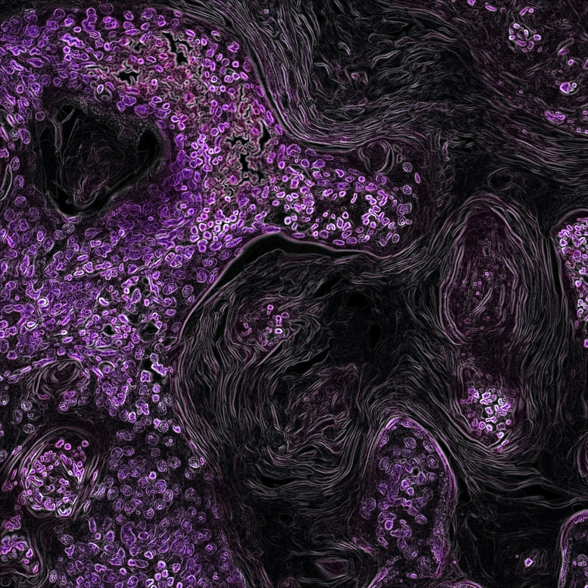
显微照片：激素环境在组织层面留下的印记（原课件配图）
生物芯片的路径优势
- 皮下缓释 绕过肝脏首过：不激活凝血因子、不升 SHBG
- 浓度平稳、剂量可控、依从性高（数月一换）
CHAPTER 04 · THYROID HORMONE: METABOLISM
甲状腺素：新陈代谢的总开关
THYROID HORMONE · 甲亢 与 甲减
甲亢：消耗态甲减：低速态
甲状腺素决定基础代谢率——它过高或过低，全身细胞的「运转速度」都会失真。
CHAPTER 04 · 甲状腺（1）
一快一慢：甲亢与甲减的临床面孔
同是甲状腺，两个极端的方向盘
甲亢 —— 代谢过速
- 「大脖子」、眼球突出
- 月经少、怕热多汗、心跳加快
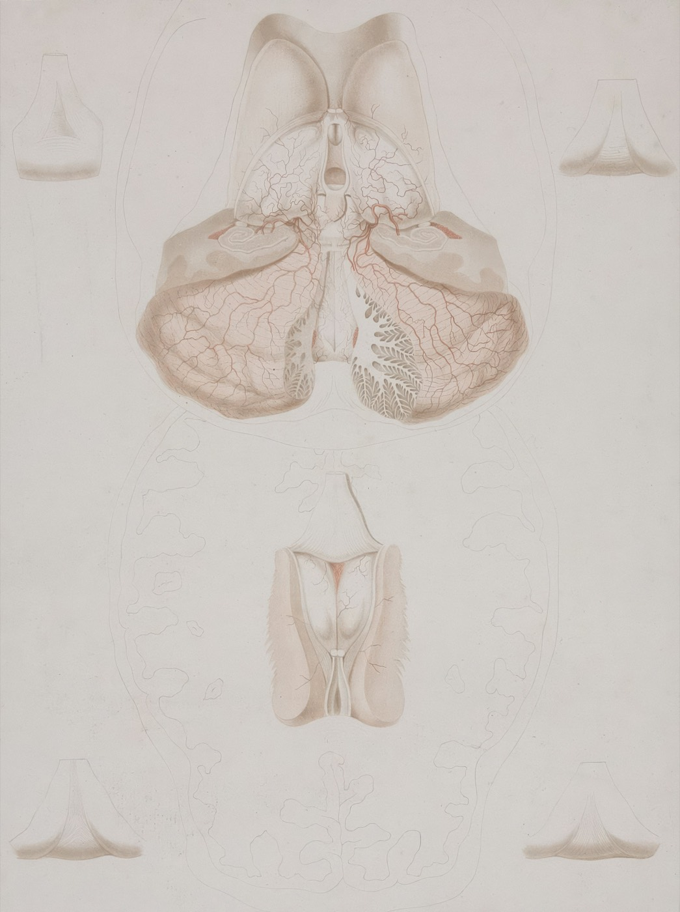
手绘解剖：脑干与小脑——神经内分泌调控网络的中枢舞台
甲减 —— 代谢低速
- 肥胖、情绪低迷、反应迟钝、健忘
- 经常便秘、怕冷、脱发
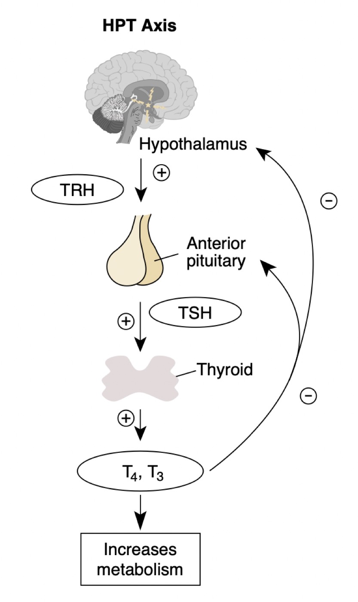
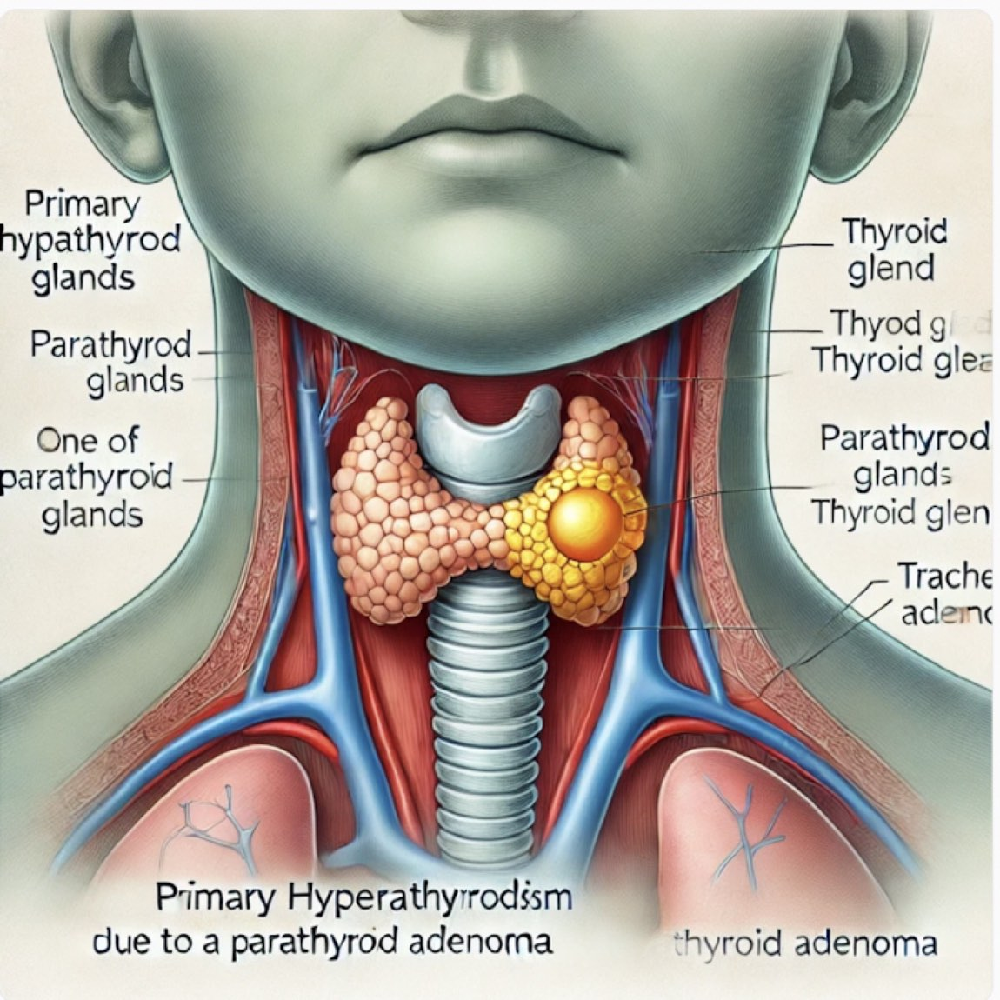
CHAPTER 04 · 肾上腺（1）
皮质醇：压力、炎症与「战或逃」
CORTISOL · FIGHT OR FLIGHT
慢性压力的具象：深夜疲惫——皮质醇节律被透支的现代场景
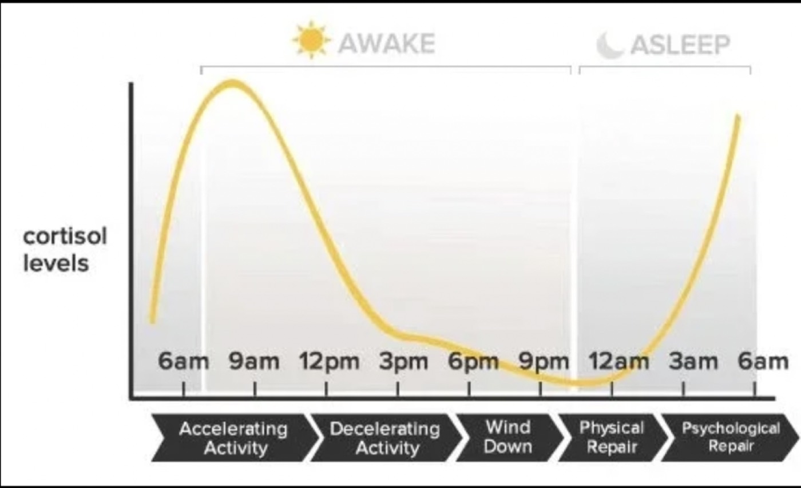
皮质醇的昼夜节律：晨高夜低，随压力失控
「战或逃」（Fight or Flight）：刻在进化里的应激反应
双重身份
- 短期：正常的生存机制（升糖、提神、抗炎）
- 长期：「慢性毒药」—— 代谢、免疫、大脑全面受损（见下页）
CHAPTER 04 · 肾上腺（2）
「应激模式」：失控的皮质醇
《Frontiers in Neuroendocrinology》：慢性压力对大脑的「神经毒性」（neurotoxicity）
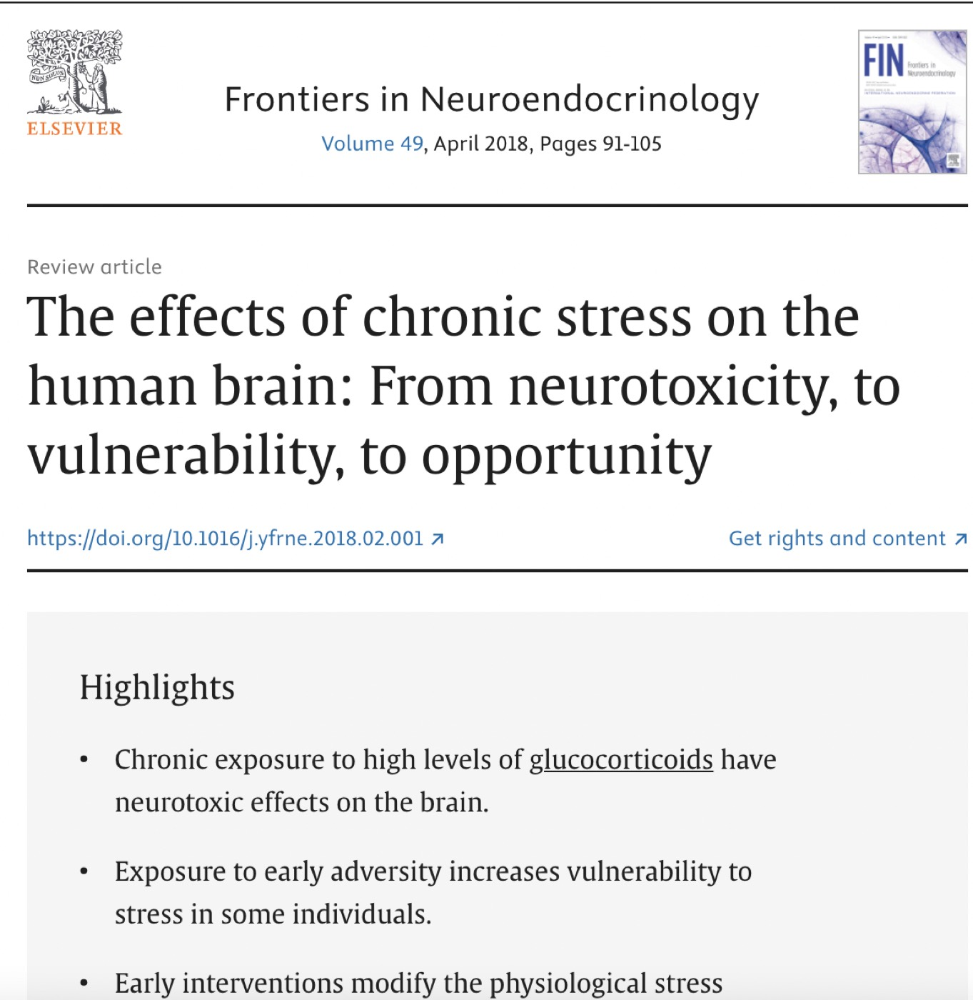
《Frontiers in Neuroendocrinology》综述（慢性应激对人脑的影响）：高糖皮质激素具神经毒性，早期逆境增加应激易感性
皮质醇长期升高 → 三处打击
- 海马体萎缩 → 记忆变差
- 前额叶功能下降 → 判断力下降
- 杏仁核过度激活 → 焦虑易怒
- → 大脑功能全面下降，加速脑衰老
现代人的压力回路
- 事业焦虑 · 家庭责任 · 社交内耗 · 年龄焦虑 → 身体持续分泌皮质醇
- 短期分泌是生存机制，长期持续升高即「慢性毒药」
CHAPTER 04 · 肾上腺（3）
「稳态负荷」—— 身体的「磨损」理论
Allostatic Load · 神经内分泌学家 McEwen & Stellar，1993 年正式提出
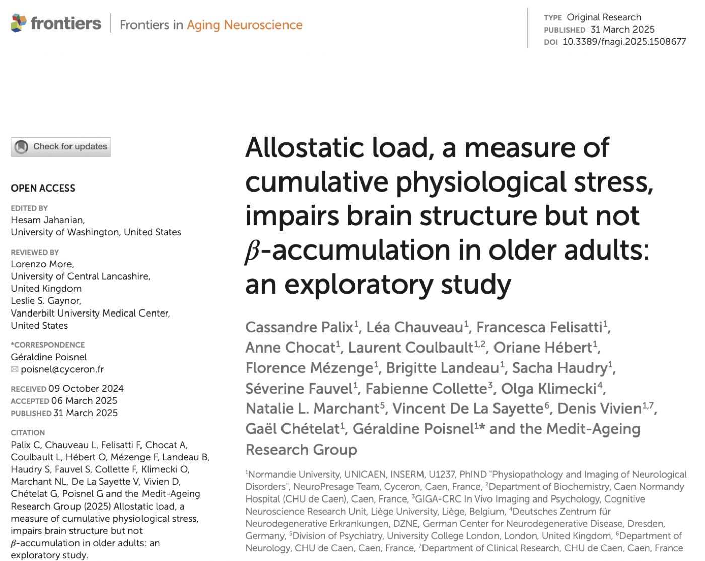
稳态负荷：动态平衡机制因长期反复压力被过度激活
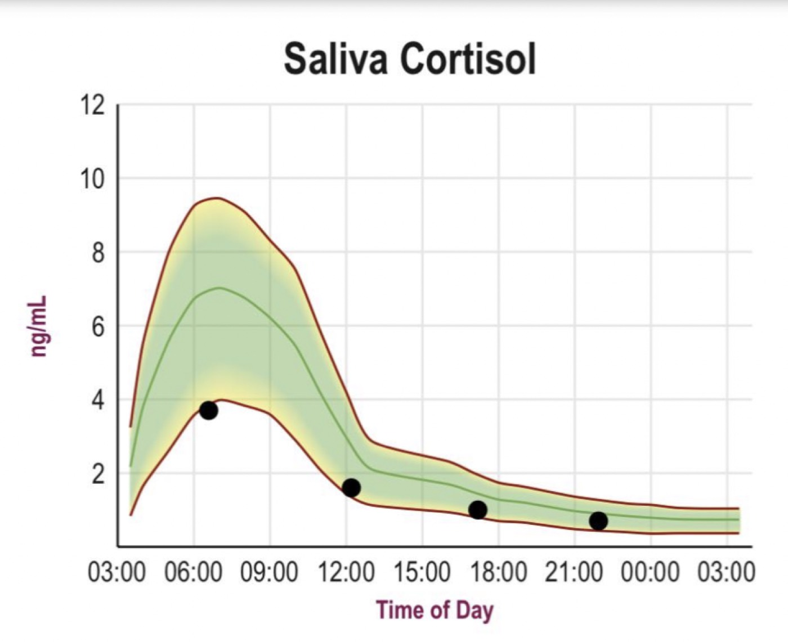
四点唾液皮质醇测试：绘制全天皮质醇曲线
什么是「磨损与撕裂」
- 当动态平衡机制因长期、反复的压力而过度激活，会对身体各系统（神经、内分泌、免疫等）造成累积性损害——这就是「稳态负荷」
测一测你的压力激素
- 四点唾液皮质醇测试：晨起 / 午 / 傍晚 / 睡前四次取样
- 看的不是单点高低，而是节律形态：晨峰钝化？夜间不落？
CHAPTER 04 · 甲状腺 / 肾上腺支持
营养素加强包：让机体自行产出所需的激素
非激素替代思路 —— 支持腺体功能本身
甲状腺支持
- 口服 T3 制剂：与市面上的 T4 补充剂不同——无需经肝、肾、脑、肌肉等外周组织的脱碘酶催化，直接利用，为机体减轻压力
- 微量元素支持：不止 T3，更补充支持甲状腺功能的微量元素，用非激素替代手段，让机体自行产出更多应机体需求的激素
肾上腺支持
- 口服补充：萃取植物来源（适应原 adaptogen 思路）
- 目标：调节皮质醇的正常节律——不是压制，而是恢复「晨高夜低」
一句话对比：芯片负责「补给」激素，加强包负责「唤醒」腺体自身的生产能力——两条路径可并行，评估先行。
CHAPTER 05 · ENVIRONMENTAL TOXINS
环境毒素：无孔不入的干扰信号
食品添加剂 · 重金属 · 永久化合物（PFAS）
EDCs 内分泌干扰三大来源
它们不急性致命，却日复一日地模拟、阻断、扰乱荷尔蒙信号——是三大腺轴之外，最容易被忽视的「第四个玩家」。
CHAPTER 05 · 环境毒素（1）
食品添加剂：六类日常暴露
读配料表的六个关键词
加工食品：添加剂密度最高的暴露源
防腐剂延长保质期 · 常见苯甲酸/山梨酸类
着色剂 · 护色剂色泽诱惑 · 部分偶氮类需留意
膨松剂 · 增稠剂口感改造 · 多见于烘焙与饮品
甜味剂代糖与代谢的争议仍在积累
CHAPTER 05 · 环境毒素（2）
重金属：五种进入路径
铅 · 汞 · 镉 · 砷 —— 累积性内分泌与神经毒性
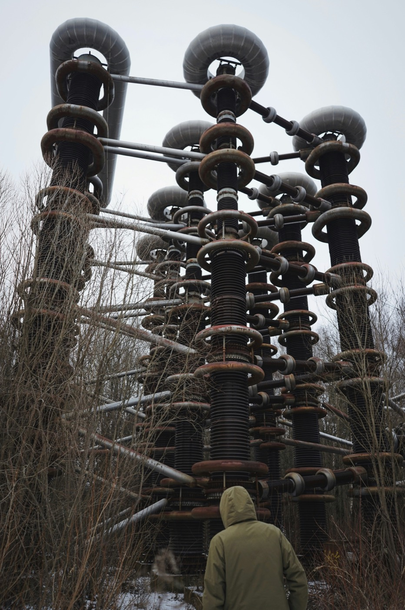
重金属暴露：从工业到日常
重金属在体内的蓄积与干扰
五种路径
- 日常用品 · 穿搭配饰（劣质金属接触）
- 废料填埋 · 工地施工（环境粉尘）
- 核污染（放射性暴露）
CHAPTER 05 · 环境毒素（3）
永久化合物 PFAS：「永不降解」的污染
全氟烷基和多氟烷基物质 —— 不粘锅 / 防水面料 / 食品包装的常客
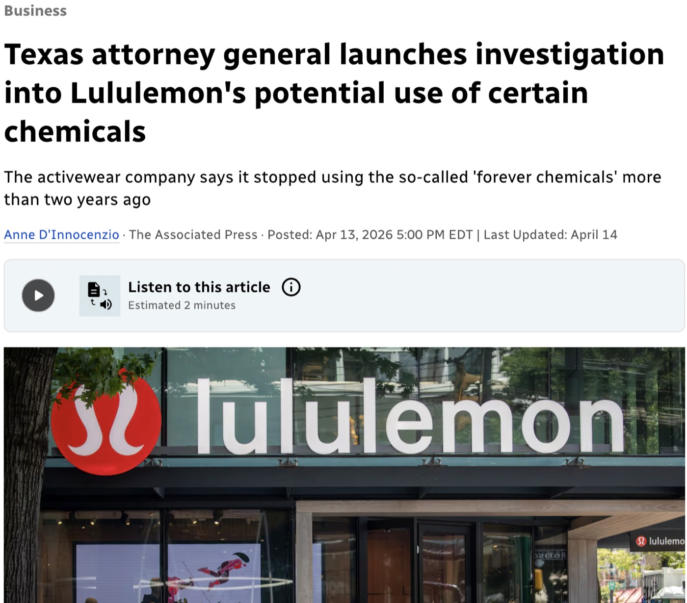
PFAS：碳-氟键极难断裂，环境中「永久」存在
两大特征
- 极难降解—— 在环境与人体内半衰期以年计
- 健康危害：内分泌紊乱、生殖问题、免疫下降、致癌……
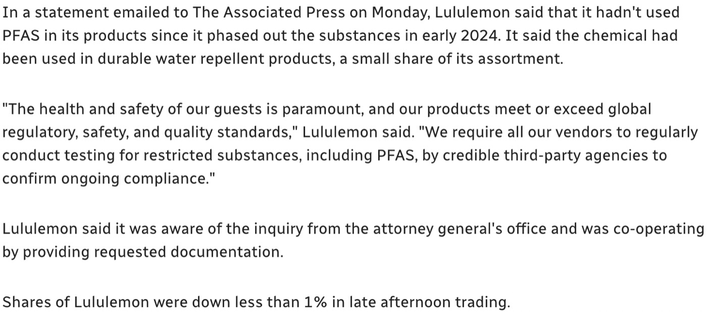
PFAS 与健康的关联证据持续累积
CHAPTER 06 · REPRODUCTIVE REJUVENATION: ORT THERAPY
生殖年轻化：卵母细胞激活术
ORT · OVARIAN REJUVENATION THERAPY
高龄生育AMH 过低PRP 生长因子
「通过再生生物学机制，逆转卵巢衰老并改善卵子质量。」——「生物滋养」技术，为被判「生育死刑」的女性打开新的大门。
CHAPTER 06 · ORT（1）
高龄生育？先看这四条适应路径
谁最可能从 ORT 获益
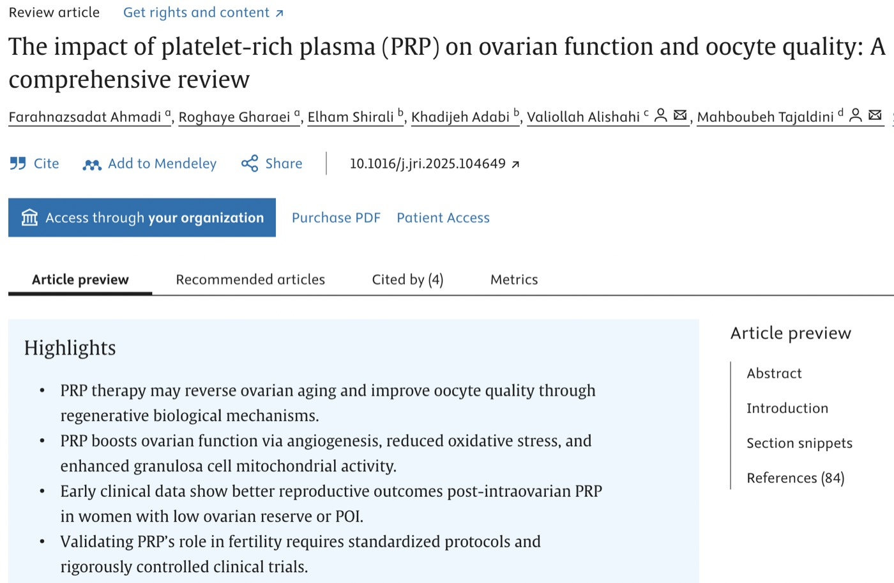
卵巢储备随年龄衰减：数量与质量同步下滑
四类候选人群
- ① 反复促排卵失败
- ② 卵泡发育停滞
- ③ 排卵障碍
- ④ 卵巢反应不良
传统方案的边界
- 常规试管婴儿方案只能「用现有的卵子」，却无法改变卵子的数量和质量
CHAPTER 06 · ORT（2）
AMH 过低？我院方案：ORT
PRP（富血小板血浆）—— 自体再生的引擎
生长因子是什么
- 促进组织再生、回春的物质
- PRP 通过离心自体静脉血获得高浓度血小板
- 持续释放 PDGF · TGF-β · VEGF 等生长因子
ORT 的逻辑链
自体血采血离心
→
PRP生长因子浓缩
→
卵巢靶向局部激活
→
卵子质量 ↑储备功能改善
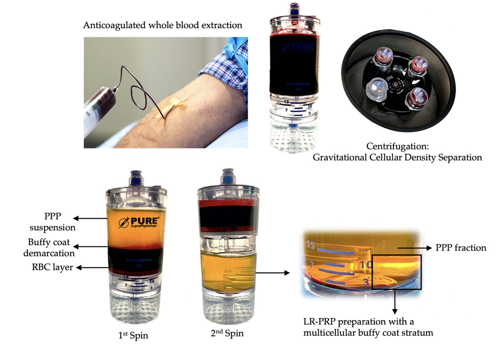
PRP 制备：抗凝全血两次离心 → PPP 血浆层 / 白膜层 / 红细胞层 → 富血小板血浆
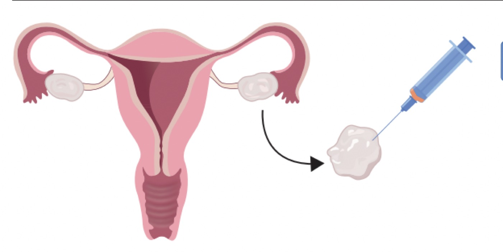
AMH（抗缪勒管激素）：卵巢储备的核心读数
CHAPTER 06 · REPRODUCTIVE REJUVENATION: VAGINOPLASTY
生殖年轻化：私密整形
功能与美观修复 · 兼顾身心健康
松弛素与盆底激素性色沉阴道年轻化手术
生育留下的改变——会阴侧切、松弛、色沉——既是功能问题，也是身心问题；激素学是理解它们钥匙。
CHAPTER 06 · 私密整形（1）
松弛素：为分娩准备，也留下松弛
Relaxin —— 怀孕期间人体产生的激素
生理作用（好的一面）
- 软化韧带和关节，尤其是骨盆周围
- 为更顺利、更安全的分娩做好准备
根本功能（代价的一面）
- 降低胶原密度、使组织松弛
- 产后松弛素回落，但胶原密度未必完全恢复——盆底与阴道支持组织的「底子」被改写
相关场景
- 会阴侧切术后的结构支持 · 阴道松弛 · 压力性尿失禁风险
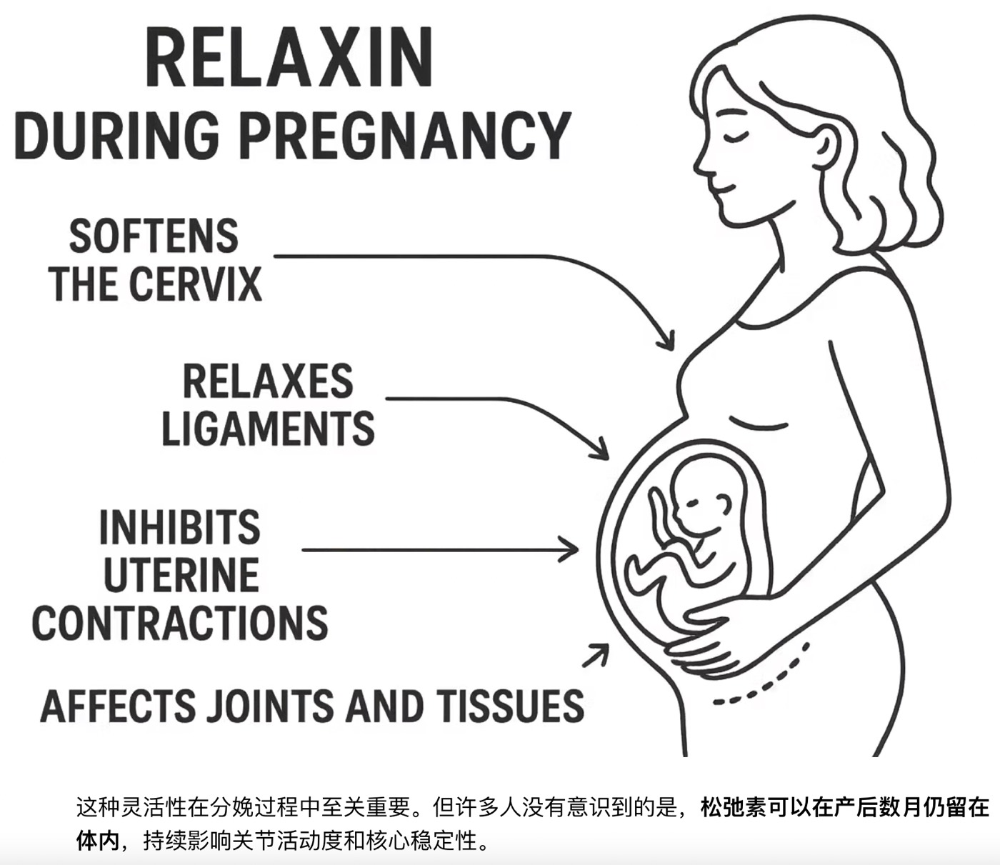
松弛素：孕期软化宫颈、放松韧带、抑制宫缩；产后数月仍残留，影响关节活动度与核心稳定性
CHAPTER 06 · 私密整形（2）
色沉？激素写在皮肤上的字
黑色素的三大激素驱动
三种驱动激素
- 雌激素 · 孕酮 · 皮质醇
- 影响黑色素细胞活性、血管信号传导和炎症——这些都是黑色素产生的关键驱动因素
受体证据
- 「人黑素细胞的细胞质和细胞核中均表达雌激素受体和孕激素受体」
- → 激素波动直接「指挥」色素沉着的部位与强度（孕斑、外阴色沉同源）
临床含义
- 只做表层美白、不调激素底色，色沉易复发
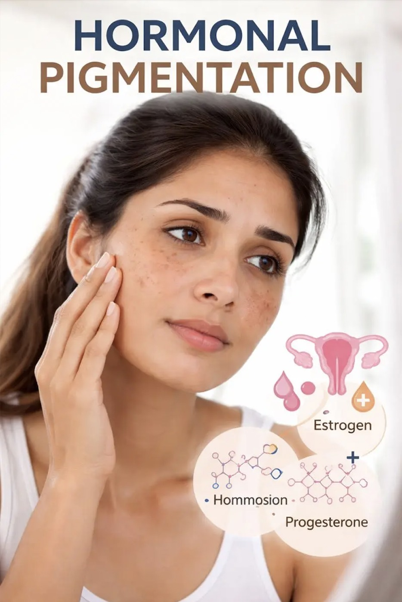
激素性色素沉着（黄褐斑）：雌激素、孕激素驱动黑色素细胞活性
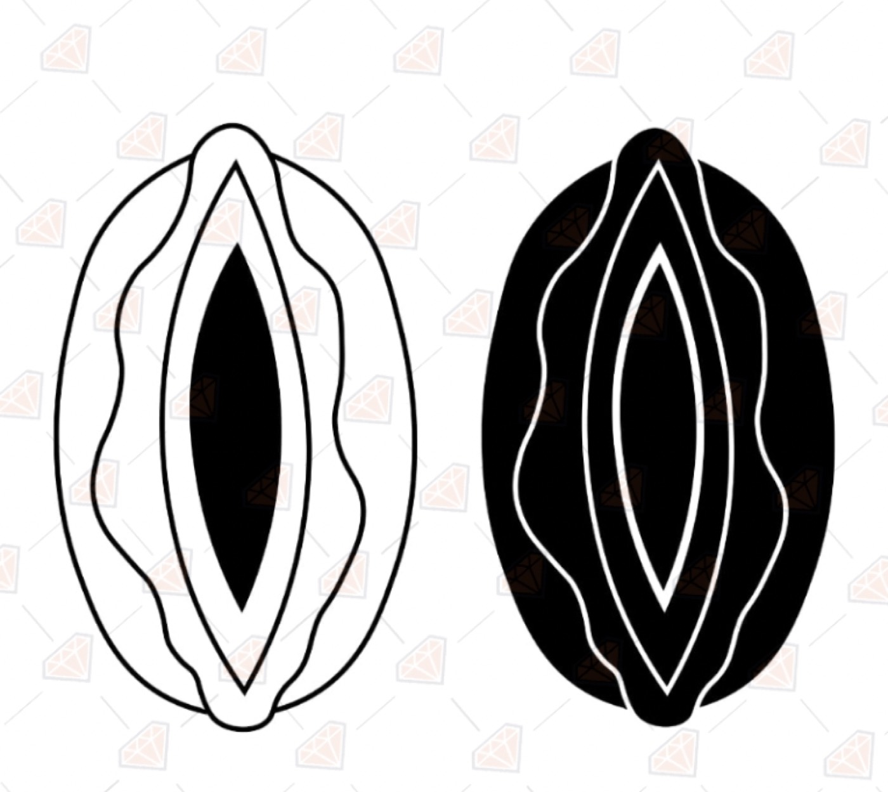
色素沉着：活性 · 血管信号 · 炎症的三重驱动
CHAPTER 06 · 私密整形（3）
阴道年轻化手术：两种成形，可分可合
功能和美观修复，兼顾身心健康
① 阴道成形术
- 目标：紧 · 弹 · 润
- 适合：产后阴道松弛、感觉减退、盆底支持不足
② 阴唇成形术
- 目标：粉 · 嫩 · 拢
- 适合：形态矫正诉求 + 色沉改善
组合策略
- 两种手术可以同时进行，也可独立选择
- 有些客户希望矫正阴唇形状，有些希望收紧阴道——以女性的选择为中心
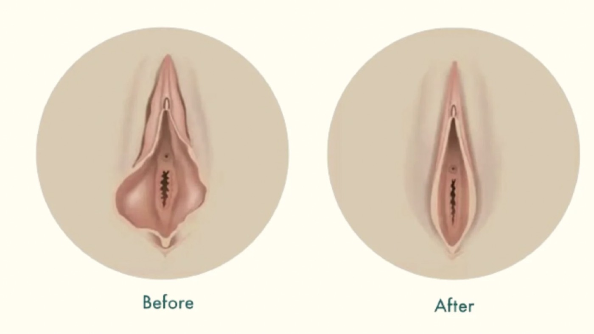
阴唇成形术：术前 vs 术后（Before / After）——缩小、对称
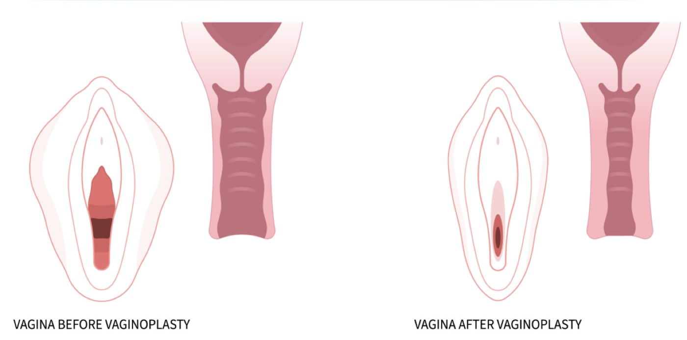
私密年轻化：个性化的方案组合
CHAPTER 07 · GUT MICROBIOTA: BILLION YEARS OF SYMBIOSIS
肠道年轻化：跨越亿年的共生
GUT MICROBIOTA · GUT–X AXIS · FMT
CELL：117 岁的秘诀GUT–X 轴菌群移植 FMT ×2 案例
荷尔蒙的故事讲到最后，底座是肠道——菌群多样性、慢性炎症水平、代谢率，都从这 38 万亿微小生命开始。
CHAPTER 07 · 肠道（1）
《CELL》封面：「117 岁的秘诀，是她的肠道」
极致长寿者的菌群画像

《CELL》：117 岁老人——肠道菌群多样性高、益生菌丰富
长寿菌群三特征
- 多样性高、益生菌多
- 发出好信号，与脑、肝、肺、免疫等「对话」
- 提高代谢率，降低慢性炎症 → 「极致长寿」
启示
- 衰老干预的终点不是单一激素，而是菌群-宿主的共生质量
CHAPTER 07 · 肠道（2）
「GUT–X」AXIS：一菌连五系
肠道菌群与全身器官的对话通道
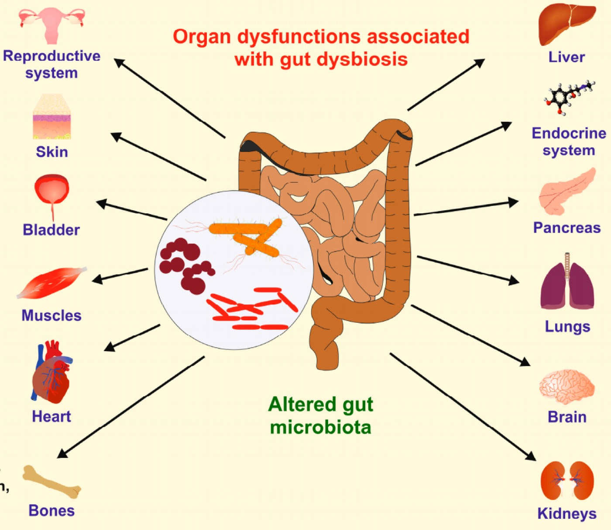
菌群失调（altered gut microbiota）→ 肝 · 内分泌 · 胰腺 · 肺 · 脑 · 肾 · 骨 · 心 · 肌肉 · 皮肤 · 生殖的多器官对话
认知：大脑肠脑轴——神经递质与迷走信号
代谢：肝、胰腺、肾、内分泌胆汁酸、短链脂肪酸、激素代谢
生殖：性腺雌激素代谢与再循环（estrobolome）
躯体：皮肤、肌肉、骨骼炎症水平与营养可用性
循环：心脏TMAO 与心血管风险
CHAPTER 07 · 肠道（3）
菌群：人类唯一可以「共享」的器官
菌群移植（FMT）—— 精准的、基于微生物组的疗法
FMT 做什么
- 通过移植抗衰明星菌群
- 达到全身多器官的系统性获益
- 和 38 万亿微小生命一起，开启生态重建的旅程
与前面的关系
- 菌群调节雌激素代谢（性腺轴）
- 参与甲状腺素转换与皮质醇应激阈值（甲状腺 / 肾上腺轴）
- → 修复荷尔蒙，别忘修底座
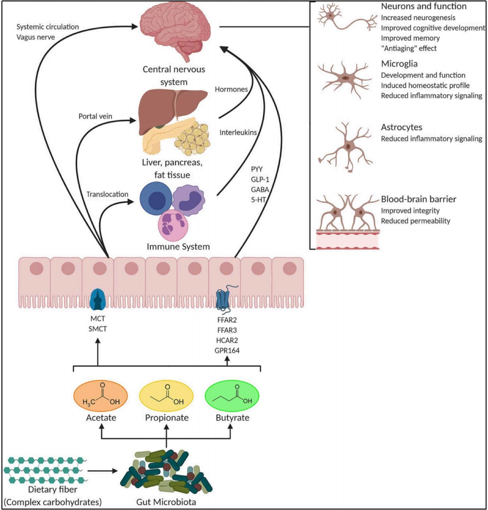
SCFA 肠-脑轴：膳食纤维经菌群发酵 → 醋酸/丙酸/丁酸 → 受体、迷走神经与 GLP-1 通路
CHAPTER 07 · 肠道干预案例（1）· 2024.7 基线
案例（1）：干预前基线 2024.7
肠道菌群移植（FMT）前的评估资料
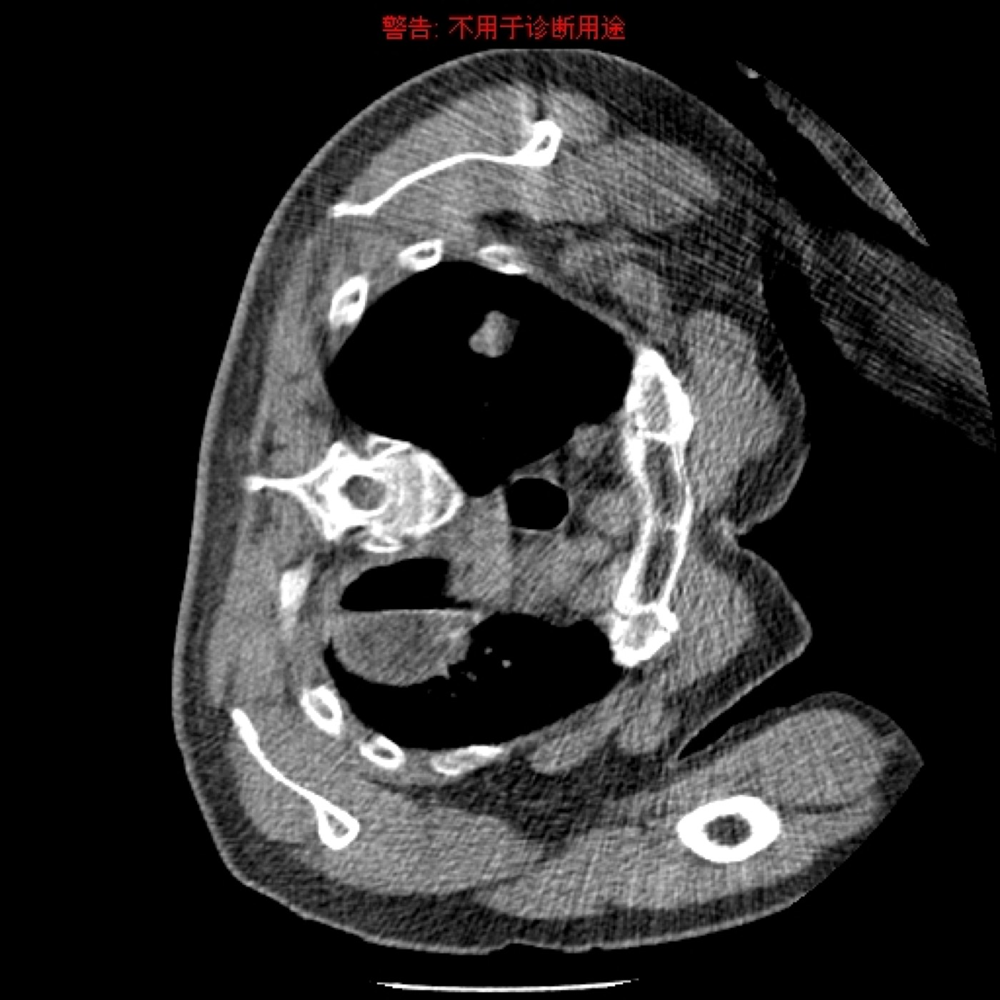
2024.7 胸部 CT：肺野内小结节影（炎性结节基础）
基线小结：菌群多样性 4.85（仅「适中」）· 阿克曼氏菌 0 · 乳杆菌 0.00062（偏低）· 条件致病菌偏高
菌群多样性指数：4.85 —— 人群水平仅「适中」
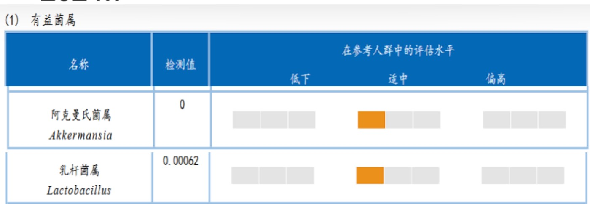
有益菌：阿克曼氏菌 0
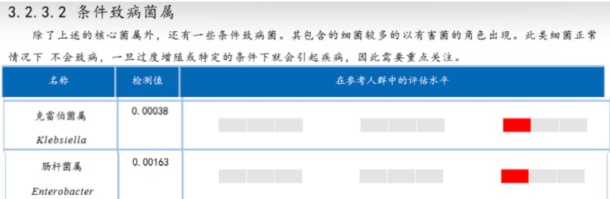
条件致病菌：克雷伯菌/肠杆菌偏高
CHAPTER 07 · 肠道干预案例（1）· 2025.4（9 个月后）
案例（1）：9 个月后复查 2025.4
FMT 针对炎性结节 —— Treg / Th17 平衡的免疫重建
菌群多样性指数：5.76 —— 升至「非常高」
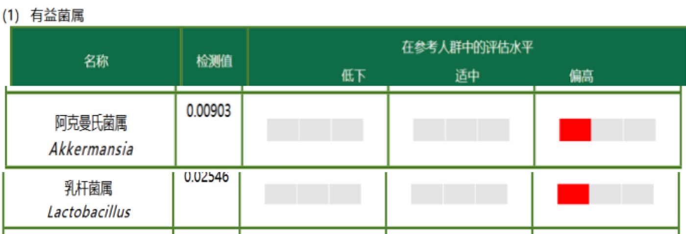
有益菌：阿克曼 0.00903 · 乳杆菌 0.02546（偏高）
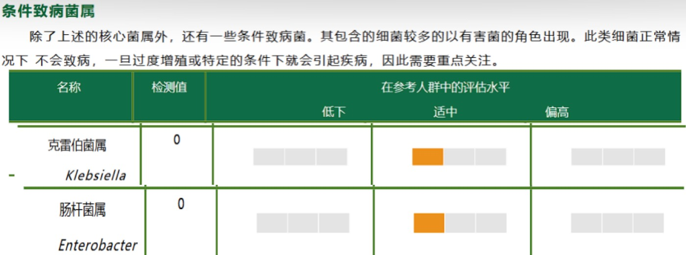
条件致病菌：克雷伯 0 · 肠杆菌 0
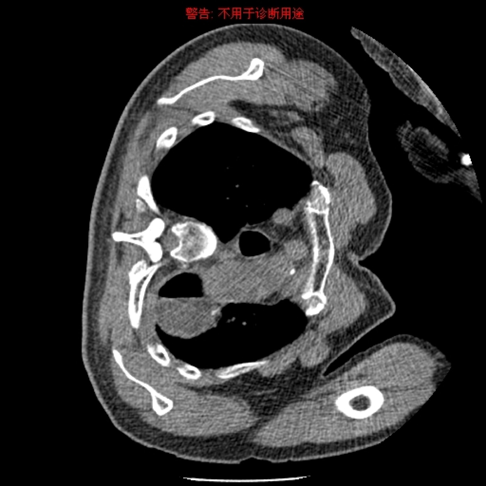
2025.4 CT 复查：与菌群改善同步随访
机制解读（三条）
- ① FMT 主要针对炎性结节
- ② 炎性结节占 60% 以上，由慢性炎症刺激增生而来
- ③ 恢复 Treg / Th17 平衡，增强肺部 APC（抗原提呈细胞）功能，帮助免疫系统识别并清除「癌前病变细胞」，降低向恶性转化的风险
CHAPTER 07 · 肠道干预案例（2）· 2025.3 基线
案例（2）：干预前基线 2025.3
血常规（过敏倾向）+ 肺功能（中度阻塞）
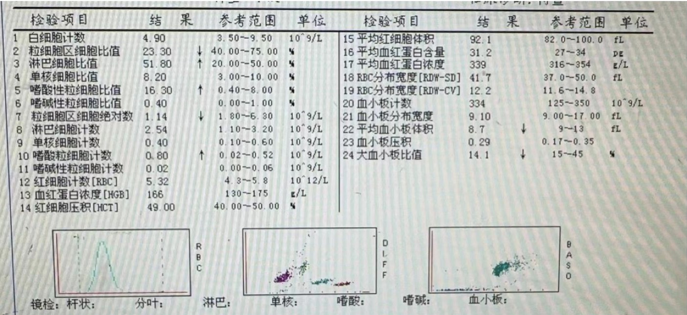
2025.3 血常规：淋巴细胞比值↑、嗜酸粒细胞↑ —— 过敏倾向
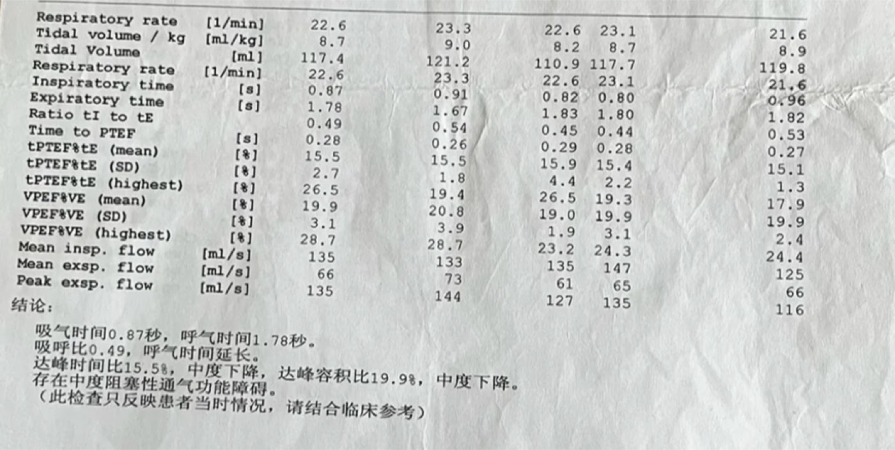
潮气呼吸肺功能：呼气延长、达峰比下降 —— 中度阻塞性通气功能障碍
CHAPTER 07 · 肠道干预案例（2）· 2025.10（7 个月后）
案例（2）：7 个月后复查 2025.10
肺通气功能恢复正常 —— 3R 路径的完整闭环
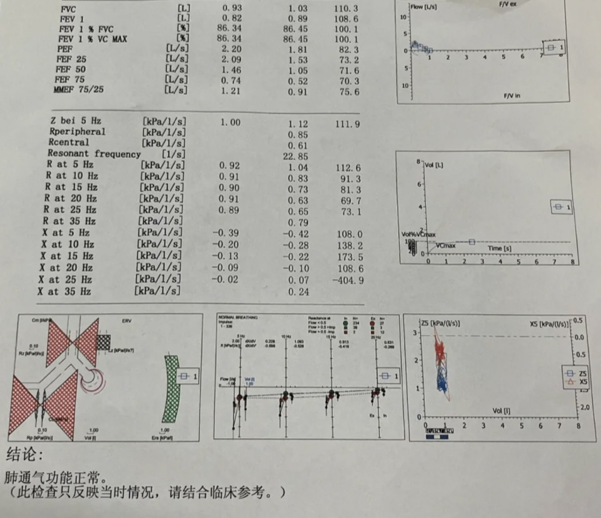
肺功能复查：通气功能恢复正常（流量-容积环恢复）
机制背景
- 过敏性哮喘占哮喘 50%–70%，与非过敏性哮喘（感染、空气污染触发）同属「气道炎症性疾病」，本质 Th2 炎症亢进
3R 干预路径
- Remove：去除食物过敏原，减少 Th2 型炎症触发
- Reinoculate：补充罗伊氏乳杆菌，降低血清 IgE
- Repair：补充谷氨酰胺修复肠屏障，减少「肠-肺过敏传递」
EPILOGUE
像旋转木马一样倒流时光
REVERSING AGE LIKE A CAROUSEL
荷尔蒙不是「青春的燃料」，而是细胞的语言——听懂它、校准它，衰老的节奏就可以被重新编排。
SUPERRIORMED · 结语
享受 120 年 25 岁的生命LIVE A 120-YEAR LIFE IN A 25-YEAR-OLD BODY
性腺管青春 · 甲状腺管代谢 · 肾上腺管压力 · 肠道是共同的底座。
从环境毒素的识别，到腺轴的精准支持，再到菌群生态的重建——年轻化是一条系统工程。
从环境毒素的识别，到腺轴的精准支持，再到菌群生态的重建——年轻化是一条系统工程。
主讲：张楚乔 · 免疫调控与抗衰医学中心 · 2026.07.04
感谢聆听 · 欢迎病例讨论与转诊交流
感谢聆听 · 欢迎病例讨论与转诊交流